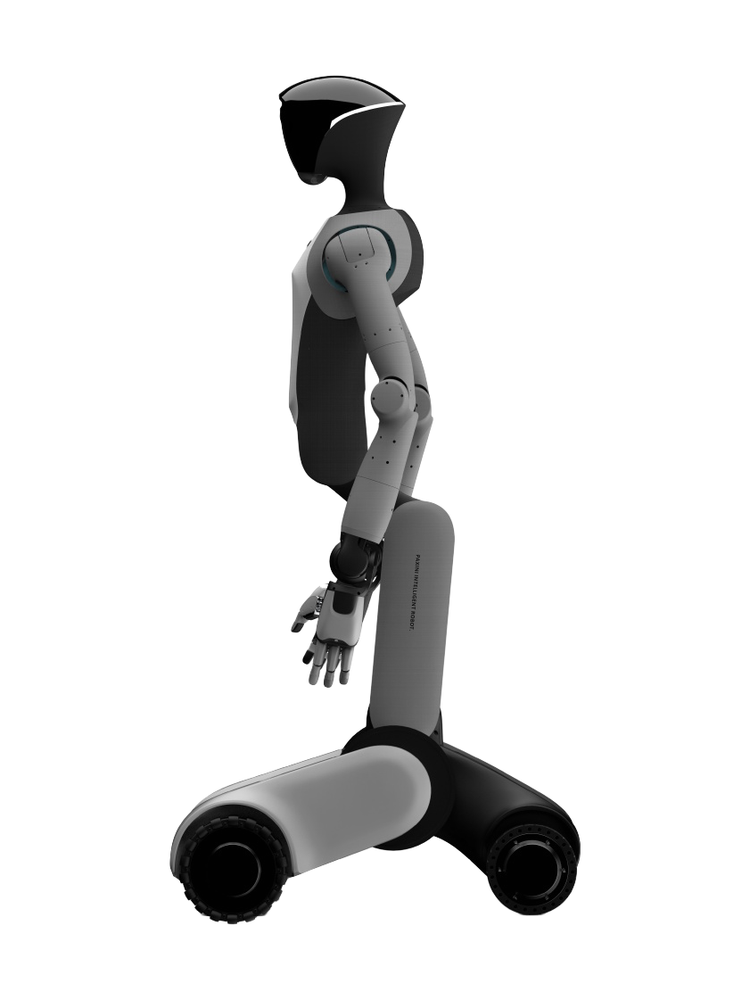

TORA DOUBLE ONE
Other variants TORA DOUBLE ONE (P) · TORA DOUBLE ONE (X)
Figures below are for TORA DOUBLE ONE.
A wheeled humanoid robot from China.
Sources retrieved: 28 September 2026 (A, B)
- Status
- In production
- Applications
- Intended use, per the manufacturer
- Meeting task demands in diverse scenarios such as industry, commerce, catering, healthcare and home services.Source and note: Intended use, per the manufacturerA paxini.com/en/robot/doubleOne · Retrieved 28 September 2026
- Indicative price
- Not stated

Product image from a reseller's page (robotsinternational.com), not the manufacturer's own site.
Specifications
5/32 specifications disclosed 27 not stated
27 fields hidden
How to read the figuresShow guideClose
- not statedNo source
- noStated by a source
- 0Reported as zero
- ASource
- A*Source with a caveat (select it)
- CERecords only what the manufacturer states regarding CE marking.
Select a source marker for source details and notes.
Physical1/13 disclosed
Power0/5 disclosed
Sensing and autonomy3/6 disclosed
Payload and expansion1/3 disclosed
Commercial0/1 disclosed
Compliance & certifications0/4 disclosed
Against the field
Each strip holds every robot of this type in the guide that states the figure, one bar per group of values. Further right means a larger figure, not a better robot. A taller bar means more robots in that group.
Degrees of freedom
52DoF
100 wheeled humanoids state degrees of freedom
5 state a higher figure, 88 a lower one. 6 state only a bound (≥ or ≤) and are not ranked.
Notes
PaXini's own product page presents TORA DOUBLE ONE without a numeric specification table; the figures come from the page's own feature text. PaXini's own online store separately lists two purchasable chassis variants, TORA DOUBLE ONE (P), an omnidirectional-chassis edition, and TORA DOUBLE ONE (X), an obstacle-crossing-chassis edition. The store shows a price for each edition; its “Buy now” buttons are greyed out.
TORA DOUBLE ONE moves on a wheeled chassis, offered as either an omnidirectional chassis (dual-steering-wheel design) or an obstacle-crossing chassis (four-wheel-drive, deformable, with independent front-leg lifting for uneven terrain); it does not walk on fixed legs.
Both chassis variants have a minimum folded height under 60 cm; no unfolded/standing height figure is given.
A labelled feature image on the product page (not the text) additionally shows a 3D LiDAR for navigation and positioning, a head depth camera, a 150-degree wide-angle fisheye camera, an AGX Orin compute platform, and a waist with one lateral-swing joint plus three pitch joints.
The end-effector is interchangeable and described as compatible with PaXini's own line of multidimensional tactile dexterous hands.
PaXini's own online mall lists TORA DOUBLE ONE at ¥410000 (omnidirectional version) and ¥430000 (obstacle-crossing version) with a buy button.
Sources
One line per source, not per figure: a source has one retrieval date.
- Apaxini.com/en/robot/doubleOneMain source. Retrieved 28 September 2026
- Bmall.paxini.com/product/robot/68945364efdafd425c1d58b7Retrieved 28 September 2026